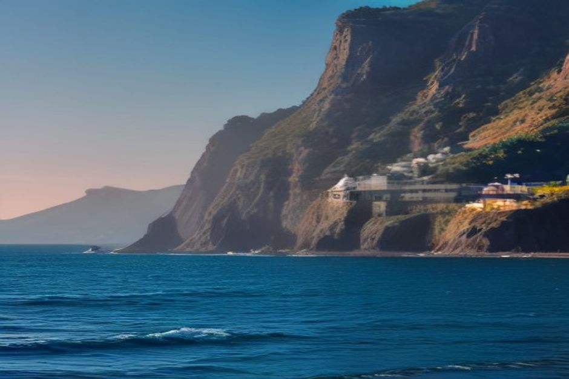
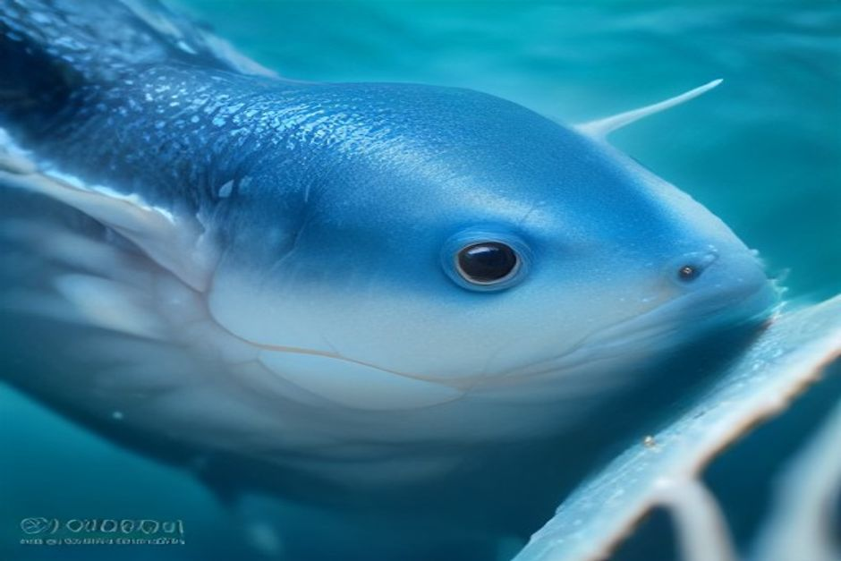

Madeira sorge sopra uno dei canyon sottomarini più profondi dell'Atlantico, e il fondale scende da una stretta piattaforma fino a oltre 3.000 metri nel giro di poche miglia nautiche da Funchal. Questa geografia spiega perché tanta vita marina passi così vicino alla costa. Ecco cosa puoi davvero aspettarti di vedere, in ordine di probabilità di avvistamento, e quando.
1. Balene pilota
La balena pilota è la balena residente di Madeira, presente tutto l'anno in gruppi familiari da 10 a 30 esemplari. Si sposta lentamente e riposa in superficie per lunghi tratti, il che la rende la balena più facile da osservare davvero in questa lista, non solo da intravedere — una barca silenziosa con il motore spento può restare accanto a un gruppo in riposo per diversi minuti di fila.

2. Tursiopi
L'avvistamento più comune al largo di Funchal, spesso in gruppi da 20 a 80 esemplari. I tursiopi sono naturalmente curiosi e si avvicinano spesso alla barca di propria iniziativa, cavalcando l'onda di prua sia a motore acceso che spento — anche se restano più a lungo una volta spento il motore.
3. Delfini comuni
Più veloci e acrobatici dei tursiopi, i delfini comuni viaggiano in gruppi numerosi, a volte enormi, e amano cavalcare la prua con grande energia ed entusiasmo. Si vedono tutto l'anno e sono di solito l'incontro più vivace di ogni uscita in barca.
4. Stenelle maculate dell'Atlantico
Una presenza stagionale, soprattutto da giugno a settembre. Gli adulti si riconoscono facilmente dai fianchi maculati di grigio e bianco che danno loro il nome — i giovani nascono di colore grigio uniforme e sviluppano le macchie con l'età.
5. Tartarughe caretta
Le tartarughe caretta risalgono in superficie per respirare per tutta l'estate e non si lasciano quasi mai disturbare da una barca silenziosa alla deriva — gli incontri a pochi metri di distanza non sono rari nelle giornate di mare calmo. Vengono avvistate più spesso mentre riposano in superficie che mentre nuotano attivamente.
6. Capodogli
Il più grande cetaceo dentato del pianeta, e l'avvistamento di balena più raro al largo di Madeira. I capodogli passano durante la migrazione, segnalati più spesso in primavera e in autunno, e quando vengono avvistati restano in genere immobili in superficie prima di un'immersione profonda che può durare 30 minuti.
7. Foche monache del Mediterraneo
Circa 25-30 foche monache vivono intorno alle Desertas, una riserva naturale integrale a circa 22 miglia nautiche a sud-est di Funchal — il che rende questo l'unico animale della lista che non si vede in una normale gita costiera. Gli avvistamenti sono riservati alle escursioni di un'intera giornata alle Desertas con operatori autorizzati, e anche in quel caso uno sbarco o un incontro ravvicinato non è mai garantito.
8. Pesci volanti
Praticamente garantiti con mare piatto e calmo. I pesci volanti schizzano fuori dalla superficie e planano per 20-30 metri con le pinne pettorali distese prima di rituffarsi in acqua — un lampo argenteo e insolito che la maggior parte di chi visita Madeira per la prima volta non si aspetta.
9. Manta
Un avvistamento occasionale ma memorabile nei mesi più caldi, di solito viste mentre si nutrono vicino alla superficie con le loro caratteristiche pinne pettorali a forma d'ala che increspano l'acqua. Molto meno prevedibili dei delfini o delle balene pilota, ma un momento davvero speciale quando capita.
10. Pesci di scogliera nelle calette costiere
Lontano dalle specie di mare aperto, le calette sottocosta tra Funchal e Cabo Girão offrono il loro spettacolo: banchi di labridi e pesci pappagallo, qualche murena nascosta tra le rocce di tanto in tanto, e un'acqua abbastanza limpida per gran parte dell'anno da vedere tutto dalla superficie con solo maschera e boccaglio. È l'incontro affidabile e quotidiano che riempie i vuoti tra gli avvistamenti più rari di mare aperto — ed è esattamente il tipo di tappa inserita nel Day Trip di Chifbay, che unisce un bagno a Fajã dos Padres al tragitto ricco di fauna selvatica lungo la costa sud.

Alcuni di questi animali si vedono a ogni uscita. Altri, sei fortunato se li vedi anche solo una volta. Ecco perché vale la pena osservare con attenzione le acque di Madeira.
Niente di tutto questo richiede una spedizione specialistica. La maggior parte di questi avvistamenti — balene pilota, entrambe le specie di delfino comune, tartarughe, pesci volanti e la vita di scogliera costiera — avviene lungo lo stesso tratto di costa sud già coperto da una breve gita privata in barca da Funchal, con le foche monache delle Desertas come unica eccezione che merita una giornata intera dedicata, se ne avete una da dedicarci.